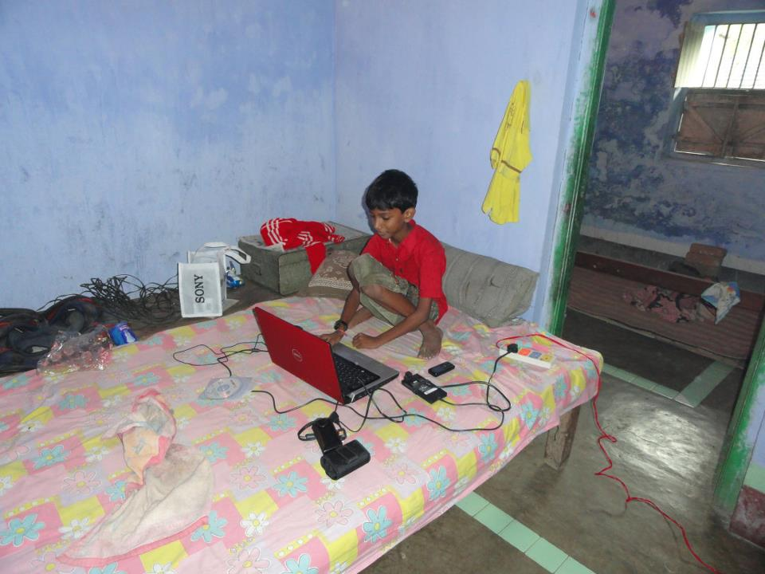

161 satir Javascript ile 10K dolar yapmak
Geçenlerde Ali ile birlikte Flippa’ya bakıyorduk. Bilmeyenler için Flippa insanların uygulama, web sitesi ya da bloglarını sattığı açık arttırmaya koyabildiği bir pazaryeri.
Neyse oradaki işlere bakarken timenite adındaki saçma sapan bir web sitesine denk geldim. Girdiğinizde karşınıza bir geriye sayım çıkarıyor, bu sayımda fortnite’in bir sonraki sezonununa ne kadar kaldığını söylüyor. Bütün işlevi bu kadar, zaman sayacının altında üstünde de adsense var.
İş buraya kadar normal gidiyorken flippa’da aylık gelirinin 200 dolar olduğunu ve bunun da flippa tarafından onaylandığını fark ettiğimde gözümde site oyuncak olmaktan çıktı. Zira 4 varlığını sürdürüyor idi, büyük ihtimalle sadece bir hafta sonunda yapıldı, hiç bakım gerektirmedi ve bu 4 senenin 3 senesinde 200 dolar yaptı ise 12 200 3 = 7200 dolar para yapmıştı. Üstüne üstlük satışa konmuş, 3500 dolara alıcısını bekliyordu.
Siteyi biraz araştırdığımda basit bir html yapısı, ve içerisindeki 161 satırlık javascript dosyasından ibaret olduğunu gördüm.
Hepsi buydu, ayrıca ben bu yazıyı yazarken site satılmıştı, o yüzden Flippa'daki sayfasına girdiğinizde 404 veriyor.
Bunu yapan kimse önce 7200 dolar adsense ile, sonra da 3500 dolar sitenin satışı ile kazanmıştı.
Valla Kıskandım :)
Kim yapmış bunu diye araştırmaya başladım, zira böyle şeyler genelde o çok şanslı ülkelerin sarışın çocuklarından çıkıyordu. Fakat bu sefer öyle olmadı. Proje Github'da açık olarak duruyordu. Buradan yapan kişinin Priyam Raj olduğunu öğrendim sonra da web sitesine ulaştım.
Baya genç bir çocuk, Hindistan’ın Bangalore şehrinde yaşıyormuş. 2009 yılından kalma şu fotoğrafından anladığım baya fakir bir aileden geliyor ama bilgisayarlara ve internete erişimi olan bir çocuk.

Kendisini açıklarken şunları yazmış:
Whether it be a film, a book or just a a simple tool, I want to keep creating useful stuff until my time on this planet.
Çok serin hikaye değil mi? Bu hikayeyi neden paylaştım peki? Kendi fikrimi çürütmek için. Daha önceki bir yazımda ortalikta girişimci yazılımcıları neden görmediğimizden bahsederken, "Bir Yazılım Geliştirmenin Zaman ve Bilgi Maliyeti Çok Arttı" demiştim. Öyle değilmiş, hala iyi bir fikir ve basit bir uygulama planı ile bir şeyler yapabiliyorsunuz.
Üçüncü dünya ülkesi olsanız bile.
09/2023